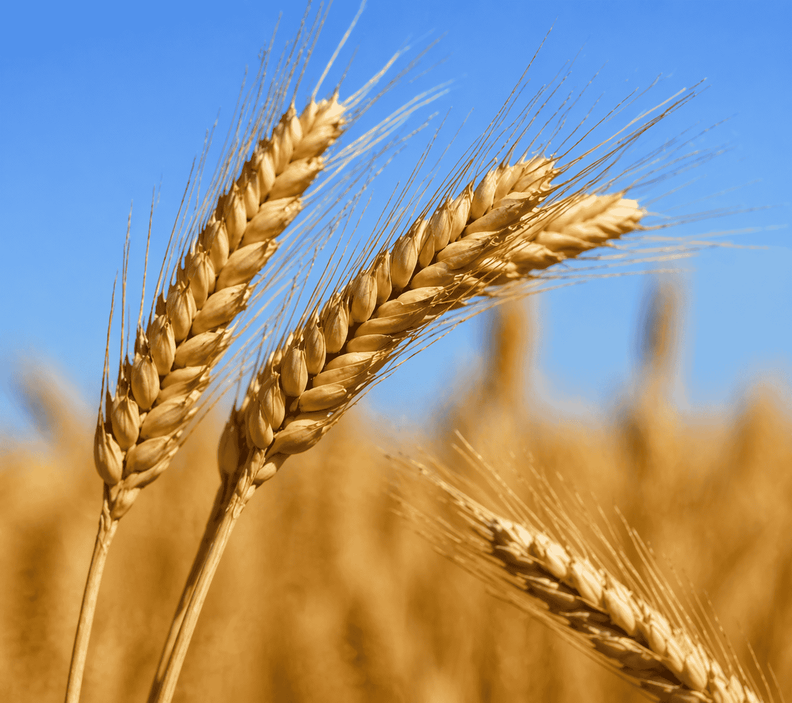

Featured Article
🌾 Wheat
Yellow Rust & Powdery
Mildew Control
Mildew Control
Fungal Disease Control
How to Control Yellow Rust & Powdery Mildew in Pakistani Wheat Fields
Yellow rust is the most destructive fungal disease for wheat farmers across Punjab and Sindh. The right fungicide at the right growth stage can protect up to 70% of your yield.
Spray Timing Guide
Fungicide Selection
Prevention Tips